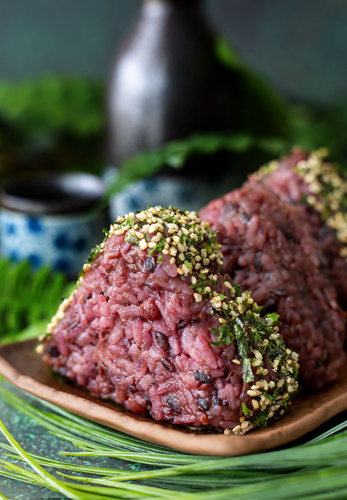

Home
Sweet Rice Ball

Red Bean Rice Ball
The Sweet Rice Ball, inspired by Sekiro, is a delightful treat that perfectly balances sweetness and texture. Each rice ball combines the sticky, fragrant sushi rice with the rich, velvety notes of sweetened red bean paste, creating a satisfying mouthfeel. The striking contrast of black rice adds a hint of earthiness and visual appeal. Often shaped into charming triangles, these rice balls can be enhanced with a sprinkle of nori furikake, offering a savory crunch that complements their sweetness. Enjoyed warm or chilled, they capture the essence of comfort food, making them a beloved snack for adventurers and food lovers alike.
- 2 1/2 cups of sushi rice
- 1/2 cup black rice
- water (follow your rice cooker's instructions)
- 3 tbsp rice vinegar
- 2 tbsp sugar
- 1/2 tsp salt
- 16 oz can of sweetened red bean (mashed)
- nori furikake (optional)
- Put the sushi rice in a bowl and fill it with cold water. With your hands, rub in a circular motion. You’ll notice the water is opaque which means it still needs to be cleaned. Strain the water out and repeat until the water is clear. Place the cleaned rice, black rice, and water required into a rice cooker and allow the rice to cook.
- Combine rice vinegar, sugar, and salt in a small bowl. When the rice has finished cooking, remove from the rice cooker and place inside a non-metallic bowl. Add the vinegar mixture to the rice while the rice is still hot. Take the rice paddle and fold in the rice vinegar. Continue to fold the rice until it has cooled down. If you aren’t going to use it immediately, cover with a wet towel to keep the rice nice and moist.
- Mix the mashed red beans with the rice. Prepare a small bowl of water since you are going to want to keep your hands moist during this process. Wet your hands and take a hand full of the rice and begin forming triangle shapes. Put a moderate amount of pressure to make sure they are forming correctly.
- If you want to add a slightly savory flavor to these, dip the edge in a bit of nori furikake. The onigiri can be wrapped in plastic wrap and stored in the refrigerator for up to a week.